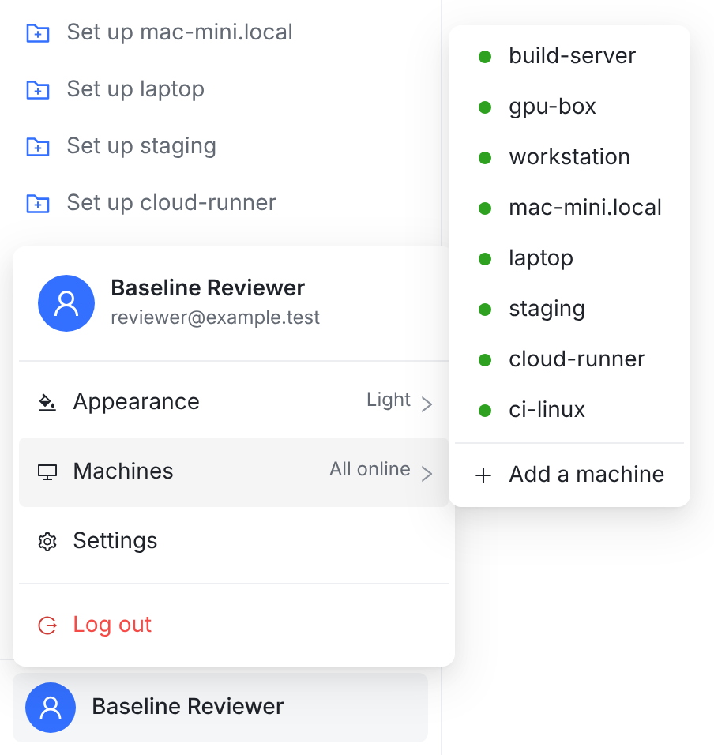
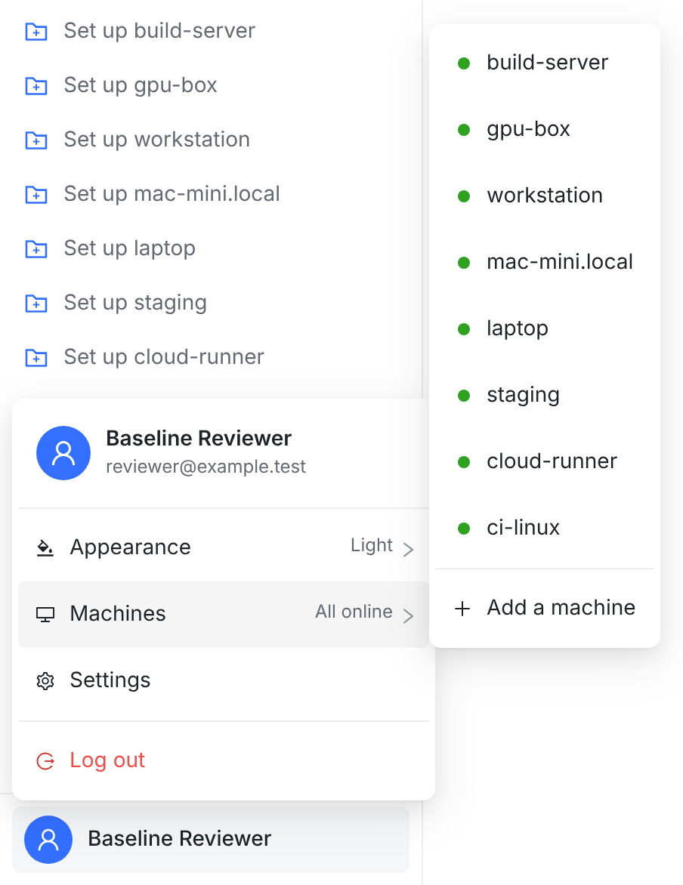

Account menu: a level down has the menu's own row height
The real web page at 2×, with the Machines level open. Main-menu rows are 44 px in both.
Before · submenu rows 32 px

After · submenu rows 44 px (Machines and Appearance)
